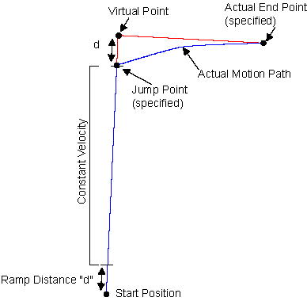

|
Was this information helpful? Yes No |
Copyright |
SLICE Command |
Blends a scanning move and a stepping move into one coordinated move.
|
Syntax: |
|
SLICE <FirstAxis> <SecondAxis>, <FirstAxisJumpPos>, <SecondAxisJumpPos>, <FirstAxisEndPos>, <SecondAxisEndPos>, <CoordinatedSpeed>, <FirstAxisJumpSpeed>, <SecondAxisJumpSpeed> |
|
|
Example: |
SLICE X Y, 2, 10, 7, 12, 20, 6, 3 |
Table: SLICE Command Arguments
|
Argument |
Type |
Description |
|---|---|---|
|
<FirstAxis> |
The first axis. |
|
|
<SecondAxis> |
The second axis. |
|
|
<FirstAxisJumpPos> |
The jump position of the first axis. |
|
|
<SecondAxisJumpPos> |
The jump position of the second axis. |
|
|
<FirstAxisEndPos> |
The end position of the first axis. |
|
|
<SecondAxisEndPos> |
The end position of the second axis. |
|
|
<CoordinatedSpeed> |
The coordinated speed of the scanning motion. |
|
|
<FirstAxisJumpSpeed> |
The speed of the stepping motion of the first axis. |
|
|
<SecondAxisJumpSpeed> |
The speed of the stepping motion of the second axis. |
Use the SLICE command to blends two moves — a scanning move and a stepping move — into one coordinated move. Blending the motion is useful for raster scanning application. First, the scanning move is initiated. When the axes start the deceleration part of the scanning move, the stepping move begins. The trajectory of the stepping move is added to the trajectory that results from the deceleration of the scanning move, which caused a blended motion profile toward the end point that you specify.
|
Note: If you use the SLICE command while you are doing velocity profiling with a VELOCITY ON - VELOCITY OFF block, then an error occurs. |
|
NOTE: You cannot use the SLICE command while a transformation (such as parts rotation or mirroring) is active. But, the SLICE command can be used with position offsets and fixture offsets. |
A SLICE move will always pass through the specified jump point and end at the specified end point. The other parameters determine the speed and path by which it arrives at the end point after the jump point is reached. Refer to Figure: SLICE Path Example, where X is the second axis and Y is the first axis.
|
Note: All distance and velocity (feedrate) parameters are in user units. The target values for the jump and end positions are either relative or absolute, based on the absolute and incremental modes. |
The scanning and stepping motions take place in arbitrary directions in the plane formed by the first and second axes. Both the scanning and stepping moves can be multi-axis moves (as defined by the jump and end points).
The scanning move is a coordinated motion; however, the stepping move is non-coordinated and the stepping axes have independent speeds and accelerations (you can set the accelerations for each move with RAMP RATE). There is one scan move speed (<CoordinatedSpeed>) and two step move speeds (<SecondAxisJumpSpeed> and <FirstAxisJumpSpeed>).
The virtual point shown in Figure: SLICE Path Example limits the actual motion path of the stepping move. The controller never moves to the virtual point, and you do not specify the virtual point. The controller determines the location of the virtual point based on the specified jump point and 'd'. 'd' is determined from the distance the scanning move requires to accelerate to the current <CoordinatedSpeed>.

|
Was this information helpful? Yes No |
Copyright |
 2001-
2001-